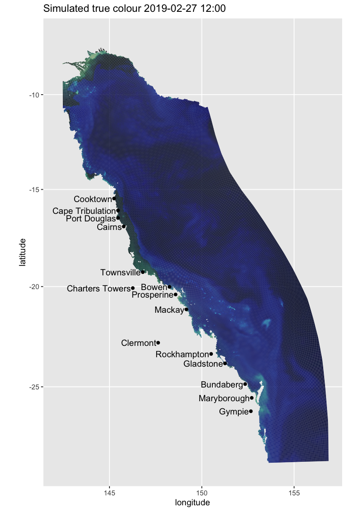
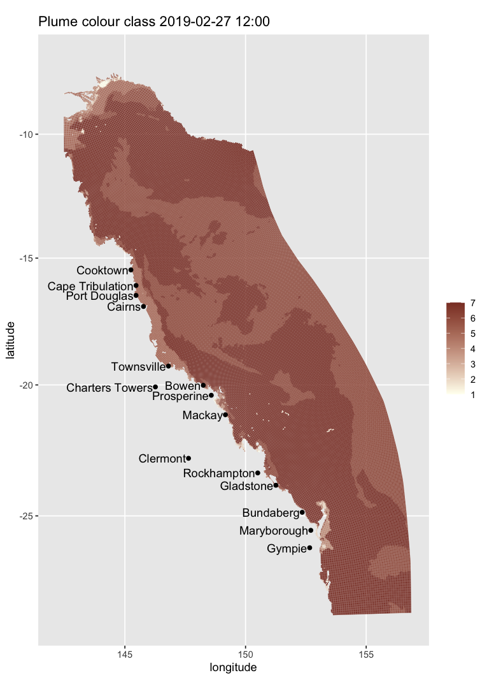
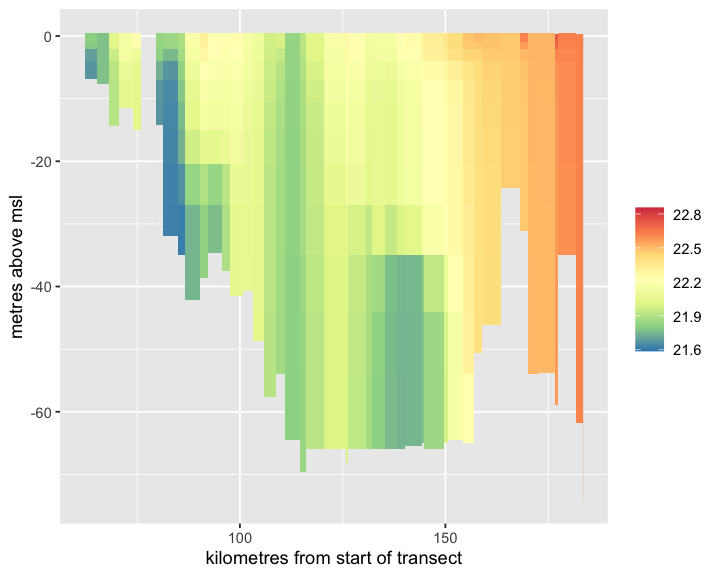

General usage
howto.RmdOverview
This guideline provides a series of practical examples on how a user might take advantage of the functionalities offered by ereefs. But first we need to load ereefs — if you have not done so yet, please see our README page for installation instructions:
Making maps and images for animations from eReefs output
Static maps
One can create a true colour image map from optical model output of the Great Barrier Reef on a specific date (select menu option 9 for high-resolution or 11 for lower resolution):
map_ereefs(target_date = c(2019, 2, 28))
It is also possible to map optical colour classes (note the default colour scheme is not great for this, so one might want to add a different colour scale after producing the figure handle):
map_ereefs(var_name = "plume", target_date = c(2019, 2, 28))
We can also map, for example, the extent of the influence of the Burdekin River (choose menu option 8 or 7):
map_ereefs(
var_name = "bur", target_date = c(2022, 2, 28),
input_file = "https://dapds00.nci.org.au/thredds/dodsC/fx3/gbr1_2.0_rivers/gbr1_rivers_simple_2022-02-28.nc.html"
)
The colour scale can be customised. For example, the code below changes the limits of the colour scale so that the max colour intensity is achieved when 1% of water is river water, and change the colours:
map_ereefs(
var_name = "bur", target_date = c(2022, 2, 28), scale_lim = c(0, 0.01),
input_file = "https://dapds00.nci.org.au/thredds/dodsC/fx3/gbr1_2.0_rivers/gbr1_rivers_simple_2022-08-28.nc.html"
)
We can also plot different variables such as chlorophyll-a at a particular depth (e.g., 5 m below MSL; default is at the surface), add a land map to the plot, and focus on a particular region (choose menu option 9 for higher resolution):
map_ereefs(
var_name = "Chl_a_sum", target_date = c(2019, 2, 28),
scale_col = "spectral", Land_map = TRUE, box_bounds = c(145, 150, -22, -18)
)
Images for animations
We can also create the image files needed for a true colour animation of surface salinity in this area (then use gifski or similar to generate the animation). Below, salt_list is a list that includes the plot handle as well as the temporal mean salinity for each point in the map over the period of the animation, plus the cell centre geo-locations (choose menu option 9). By default, images are saved to the directory "ToAnimate", but can be changed via the argument output_dir (NB: the code below is not run):
# code not run
map_ereefs_movie(
var_name = "salt", start_date = c(2019, 2, 15), end_date = c(2019, 3, 10),
Land_map = TRUE, box_bounds = c(145, 150, -22, -18), scale_col = "spectral",
scale_lim = c(30, 35)
)Plotting vertical profiles and slices through the data
The code example below extracts the data from a vertical slice of temperature along a line segment at latitude 20 degrees South (choose menu option 2). Note that a slice can also be defined along a long, curvy line, for example a boat track, by adding more points to the location_latlon argument in function get_ereefs_slice. One can also get data from multiple variables by making var_names a vector (e.g., var_names = c("temp", "salt")).
temp_slice <- get_ereefs_slice(
var_names = "temp", target_date = c(2022, 8, 1),
location_latlon = data.frame(latitude = c(-20, -20), longitude = c(145, 150))
)Now visualise the results:
plot_ereefs_slice(temp_slice, var_name = "temp", scale_col = "spectral")
We can also extract a vertical profile (rather than a slice) of, for example, chlorophyll-a and nitrate at a single location and time (choose menu option 11):
profile_data <- get_ereefs_profile(
var_names = c("Chl_a_sum", "NO3"), start_date = c(2019, 3, 10),
end_date = c(2019, 3, 10), location_latlon = c(-23.39, 150.89)
)Now visualise the results for NO3-:
plot_ereefs_profile(
profile_data, var_name = "NO3", target_date = c(2019, 3, 10)
)
We are currently working on improving the function get_ereefs_profile so that it can work for multiple time profiles.
We can also extract a time-series of surface data at a single or multiple specified locations (choose menu option 11):
tsdata <- get_ereefs_ts(
var_names = c("salt", "DIP", "ZooL_N"), start_date = c(2018, 1, 1),
end_date = c(2018, 2, 28),
location_latlon = data.frame(
latitude = c(-23.4, -17), longitude = c(150.9, 147.0)
)
)The locations could even be at all the Marine Monitoring Program routine water quality sampling locations:
mmpdata <- get_ereefs_ts(
var_names = c("salt", "TN"), location_latlon = "mmp",
start_date = c(2018, 1, 1), end_date = c(2018, 2, 28)
)The time-series can also be extract at a specified depth of 5 m below MSL:
deeperdata <- get_ereefs_ts(
var_names = "Chl_a_sum", location_latlon = c(-23.4, 150.9),
start_date = c(2018, 1, 1), end_date = c(2018, 2, 28), layer = -5
)One could also have set the argument layer = "bottom" to extract a time-series of data at the bottom of the water column. However, to extract a time-series of data averaged over the depth of the water column, the user woul use the function get_ereefs_depth_integrated_ts:
intdata <- get_ereefs_depth_integrated_ts(
var_names = "Chl_a_sum", location_latlon = c(-23.4, 150.9),
start_date = c(2018, 1, 1), end_date = c(2018, 2, 28)
)Other options include extracting a time-series of the mass per square metre of a variable, integrated over the depth of the water column:
intdatapermass <- get_ereefs_depth_integrated_ts(
var_names = "Chl_a_sum", location_latlon = c(-23.4, 150.9),
start_date = c(2018, 1, 1), end_date = c(2018, 2, 28), mass = TRUE
)or extracting a time-series of data at a specified depth below the tidal free surface (rather than below MSL):
tidalintdata <- get_ereefs_depth_specified_ts(
var_names = "Chl_a_sum", location_latlon = c(-23.4, 150.9),
start_date = c(2018, 1, 1), end_date = c(2018, 2, 28), depth = 5.0
)